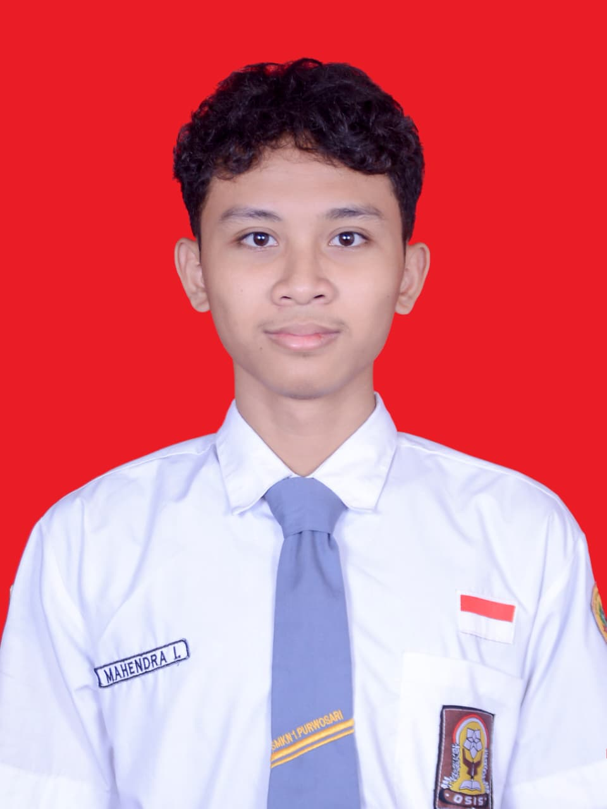

Mahendra Ivander
Portofolio Pribadi
PORTOFOLIO
Mengenal Profil, Pengalaman, dan Karya Saya
HALO SEMUA, AKU MAHENDRA IVANDER
Saya seorang pengembang web pemula yang memiliki ketertarikan besar pada dunia Front-End Development dan UI Design. Saya senang mengeksplorasi teknologi baru, mengasah kemampuan koding, serta membangun proyek web yang menarik dan memberikan pengalaman pengguna yang baik.

Hard Skill
Saya berfokus pada pengembangan Front-End dengan keahlian utama merancang antarmuka website yang responsif dan estetik. Berbekal penguasaan HTML, CSS, JavaScript, dan Tailwind CSS, saya siap menciptakan pengalaman pengguna (UX) yang maksimal.

UI/UX Design
Merancang purwarupa (prototype) dan desain antarmuka aplikasi atau website menggunakan Figma yang estetik, intuitif, dan berpusat pada pengguna.
Front-End Dev
Pembuatan struktur dan tata letak website yang responsif menggunakan HTML5, CSS3, dan framework modern seperti Tailwind CSS agar tampil sempurna.
Design System
Memahami cara membuat komponen antarmuka yang konsisten dan dapat digunakan kembali (seperti tombol, kartu, atau bentuk input) berdasarkan design system..
Soft Skill
Selain keahlian teknis, saya percaya bahwa kemampuan berinteraksi dan beradaptasi sangat penting. Berikut adalah beberapa soft skill yang saya andalkan dalam bekerja dan berkolaborasi.
Kerja Sama Tim
Mampu berkolaborasi aktif dalam kelompok, menghargai sudut pandang rekan tim, dan saling mendukung untuk mencapai tujuan bersama.
Komunikasi yang baik
Mampu menyampaikan ide, alur kerja, dan informasi secara jelas, serta aktif mendengarkan masukan untuk menjaga kelancaran komunikasi dalam tim.
Manajemen Waktu
Mampu memprioritaskan tugas dan mengelola waktu kerja secara efisien untuk menyelesaikan setiap proyek sesuai batas waktu yang ditentukan.
Adaptabilitas
Fleksibel dan mudah menyesuaikan diri dengan perubahan alur kerja, kebutuhan proyek, atau dinamika tim yang baru.
Project
Website Sederhana